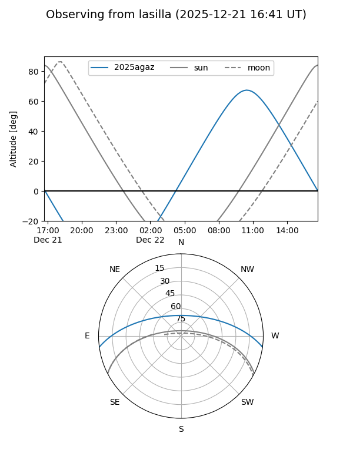
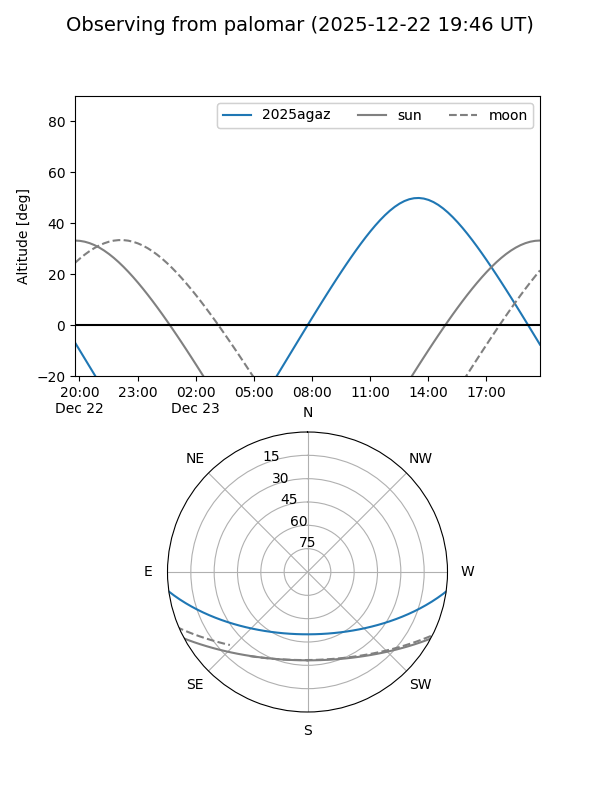
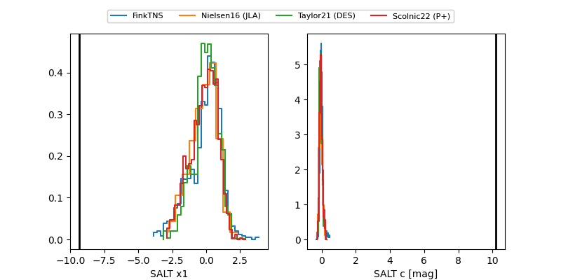

2025agaz
Target 2025agaz at 2025-12-21 13:07
Aliases and brokers:
FINK: fink-portal.org/ZTF25acgcitj
Lasair: lasair-ztf.lsst.ac.uk/objects/ZTF25acgcitj
ALeRCE: alerce.online/object/ZTF25acgcitj
TNS: wis-tns.org/object/2025agaz
YSE: ziggy.ucolick.org/yse/transient_detail/2025agaz
alt names
ZTF25acgcitj (ztf,fink_ztf)
2025agaz (tns,yse)
Coordinates:
equatorial (ra, dec) = 177.1808,-6.55906
equatorial (HMS+DMS) = 11:48:43.40,-06:33:32.61
galactic (l, b) = (276.4035,+53.05183)
Flags:
Photometry:
last ztfg=19.25
4 ztfg detections
Lightcurve

Visibility


Additional plots
